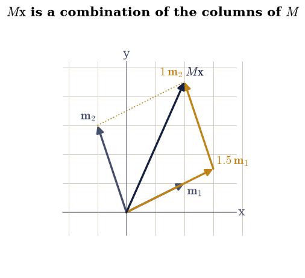
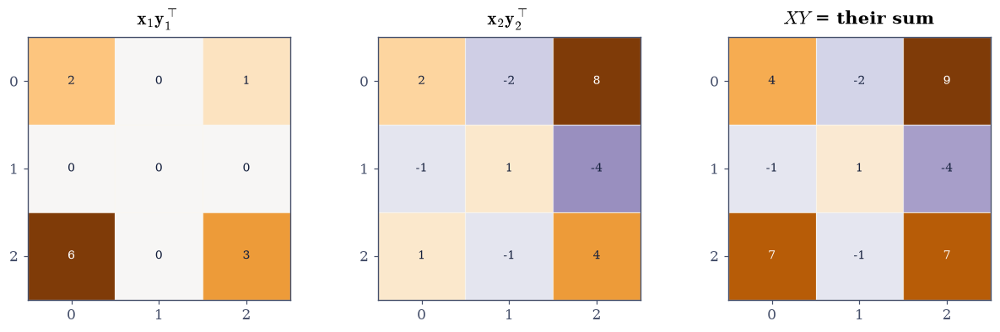
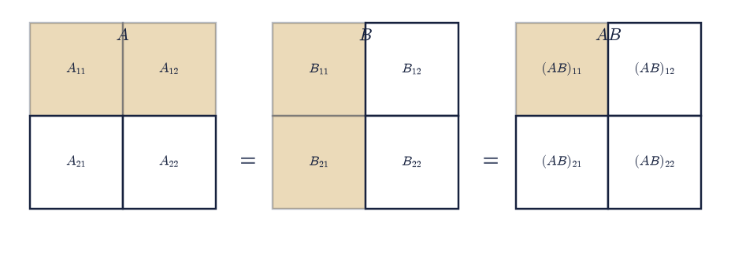
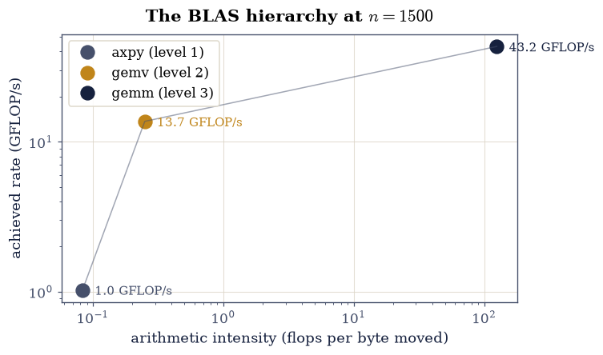

1.1 Matrices as Linear Maps: Four Ways to Multiply#
Notebook overview#
There is one sentence to take from this notebook, and the rest of Chapter I is its consequences: \(A\mathbf{x}\) is a linear combination of the columns of \(A\), with the entries of \(\mathbf{x}\) as the coefficients.
Read that way, questions that look like separate topics become the same question. Which vectors can \(A\) produce? All combinations of its columns — the column space. When does \(A\mathbf{x} = \mathbf{b}\) have a solution? Exactly when \(\mathbf{b}\) is such a combination. How many genuinely different directions can \(A\) reach? The number of independent columns, which is the rank. The Prologue’s matrix had a column equal to the sum of two others, and every factorization there detected it; here we see why they all had to.
The second half is about products of matrices, which turn out to be expressible four different ways — as a grid of inner products, as a sum of outer products, as a block computation, and as an index contraction. All four compute identical numbers, and each makes a different theorem obvious. The outer-product form is the one that explains low-rank approximation in Chapter IV; the block form is how every fast algorithm in Chapter V is actually written; the index form is how attention is written in Chapter VIII.
The notebook closes with a measurement that governs the rest of the course. The three levels of the BLAS — vector–vector, matrix–vector, matrix–matrix — reach wildly different fractions of a machine’s peak speed, and the reason is not implementation quality but arithmetic intensity: how many operations each byte moved from memory can support. Matrix–matrix products win by a factor of sixty, which is why algorithms that can be phrased as matrix–matrix products are, and why the ones that cannot are slow no matter how few operations they perform.
How to read a check. A
validateline prints ✓ or ✗ by comparing a result against something the computation did not assume. A ✗ flags a mismatch to investigate, never a verdict on its own.
Theory in brief#
The column picture#
Write \(A \in \mathbb{R}^{m\times n}\) by its columns, \(A = [\,\mathbf{a}_1\ \mathbf{a}_2\ \cdots\ \mathbf{a}_n\,]\). Then for \(\mathbf{x} \in \mathbb{R}^n\),
There is a second, equally valid reading. Writing \(A\) by its rows \(\mathbf{r}_1^{\top},\dots,\mathbf{r}_m^{\top}\),
so the result is the stack of \(m\) inner products. The two give the same vector, and both are useful, but they answer different questions. The row picture Eq. 39 is how you compute an entry; the column picture Eq. 38 is how you think about what the map can reach. This course leads with the column picture, and where the two disagree about which is more illuminating, the column picture wins.
Linearity, and what a matrix is for#
A map \(T : \mathbb{R}^n \to \mathbb{R}^m\) is linear when \(T(\alpha\mathbf{x} + \beta\mathbf{y}) = \alpha T(\mathbf{x}) + \beta T(\mathbf{y})\). Every such map is \(\mathbf{x} \mapsto A\mathbf{x}\) for exactly one matrix, whose \(j\)-th column is \(T(\mathbf{e}_j)\) — feed the map each basis vector in turn and record what comes out. That is the entire content of “matrices represent linear maps”, and §1.6 develops what changes when the basis does.
The product \(AB\) is then defined so that it represents the composition:
Matrix multiplication is not an arbitrary rule to memorise; it is the unique rule that makes Eq. 40 true.
Four ways to write the same product#
For \(A \in \mathbb{R}^{m\times k}\) and \(B \in \mathbb{R}^{k\times n}\):
Inner products. \((AB)_{ij} = \mathbf{r}_i^{\top}\mathbf{c}_j\), row \(i\) of \(A\) against column \(j\) of \(B\). One number at a time.
Sum of outer products. Writing \(\mathbf{a}_p\) for the \(p\)-th column of \(A\) and \(\mathbf{b}_p^{\top}\) for the \(p\)-th row of \(B\),
(41)#\[AB \;=\; \sum_{p=1}^{k} \mathbf{a}_p\,\mathbf{b}_p^{\top} ,\]a sum of \(k\) matrices each of rank one. This is the form that matters most later: it says every product is a sum of \(k\) rank-one pieces, so truncating the sum gives a low-rank approximation, which is exactly what §4.2 does with the SVD.
Blocks. Partition both matrices conformably and multiply the blocks as if they were scalars, respecting the order. This is how every cache-efficient implementation is written.
Indices. \((AB)_{ij} = \sum_p A_{ip}B_{pj}\), which is
np.einsum("ip,pj->ij", A, B).
Arithmetic intensity, and why level 3 wins#
The three levels of the BLAS are vector–vector (level 1, e.g. \(\alpha\mathbf{x} + \mathbf{y}\)), matrix–vector (level 2, \(A\mathbf{x}\)), and matrix–matrix (level 3, \(AB\)). Their flop counts and their memory traffic scale differently, and the ratio
is \(O(1)\) for level 1, \(O(1)\) for level 2, and \(O(n)\) for level 3. Since a modern processor can perform far more arithmetic per second than its memory system can supply operands, low intensity means the arithmetic units sit idle waiting for data. Level 3 is the only one that escapes, which is why “recast the algorithm in terms of matrix–matrix products” is the single most effective optimisation in numerical linear algebra [GVL13].
Setup#
Data and instruments only: the worked matrices and the timing meter of §0.1. Nothing here is any exercise’s lesson.
The Setup below holds this notebook’s data and instruments — nothing you are asked to build. It is collapsed so the building stays yours; expand it whenever you want the details.
Exercise 1: The column picture, drawn#
Eq. 38 says \(A\mathbf{x}\) is a weighted sum of the columns. In two dimensions that is a statement you can draw, so we draw it.
Take the explicit matrix and vector
whose columns are \(\mathbf{m}_1 = (2,1)^{\top}\) and \(\mathbf{m}_2 = (-1,3)^{\top}\). Then Eq. 38 gives \(M\mathbf{x} = 1.5\,\mathbf{m}_1 + 1\,\mathbf{m}_2 = (3,1.5)^{\top} + (-1,3)^{\top} = (2, 4.5)^{\top}\), which is the diagonal of the parallelogram built from the two scaled columns. The row picture Eq. 39 gets the same answer by a different route: \((2\cdot1.5 + (-1)\cdot1,\ 1\cdot1.5 + 3\cdot1) = (2, 4.5)\).
The picture also makes the reach of the map visible. As \(\mathbf{x}\) ranges over all of \(\mathbb{R}^2\), the combinations \(x_1\mathbf{m}_1 + x_2\mathbf{m}_2\) fill the whole plane exactly when \(\mathbf{m}_1\) and \(\mathbf{m}_2\) are not parallel. If they were parallel, every \(M\mathbf{x}\) would lie on one line, and the matrix would be singular — which is what \(\det M = 0\) detects, and §1.7 makes quantitative.
Part a) Compute \(M\mathbf{x}\) three ways for
Eq. 43: as M @ x, as the column combination
x[0] * M[:, 0] + x[1] * M[:, 1] of Eq. 38, and as
the stacked inner products np.array([M[0] @ x, M[1] @ x]) of
Eq. 39. All three must give exactly \((2, 4.5)^{\top}\).
Part b) Draw the column picture: the two columns as arrows from the origin, their scaled copies \(1.5\mathbf{m}_1\) and \(1\mathbf{m}_2\), and the result \(M\mathbf{x}\) as the diagonal of the parallelogram they close.
Part c) Confirm linearity numerically on Eq. 43: for
500 random pairs \(\mathbf{u}, \mathbf{v}\) and random scalars \(\alpha, \beta\)
from rng.standard_normal, check
\(M(\alpha\mathbf{u} + \beta\mathbf{v}) = \alpha M\mathbf{u} + \beta M\mathbf{v}\)
to \(10^{-13}\).
M @ x = [2. 4.5]
x1*m1 + x2*m2 (Eq. 1) = [2. 4.5]
stacked row products (Eq. 2) = [2. 4.5]
all exactly (2, 4.5): True
linearity over 500 random combinations: max defect 3.553e-15

Fig. 17 The column picture of Eq. 1 for the matrix \(M\) and vector \(\mathbf{x}\) of Eq. 6: the columns \(\mathbf{m}_1 = (2,1)^{\top}\) and \(\mathbf{m}_2 = (-1,3)^{\top}\) in grey, their scaled copies \(1.5\,\mathbf{m}_1\) and \(1\,\mathbf{m}_2\) in amber, and the result \(M\mathbf{x} = (2, 4.5)^{\top}\) in ink as the diagonal of the parallelogram the scaled columns close.#
Validation 1#
The three routes are checked for exact equality, since the entries of Eq. 43 are exactly representable and all three perform the same two multiplications and one addition per component. Linearity is checked over a sample rather than on one example, which is the difference between an illustration and a verification.
✓ M x = (2, 4.5) exactly [max|Δ| = 0 (rtol=0, atol=0)]
✓ the column combination of Eq. 1 gives the same vector [max|Δ| = 0 (rtol=0, atol=0)]
✓ and so does the stack of row inner products of Eq. 2 [max|Δ| = 0 (rtol=0, atol=0)]
✓ the map is linear: M(au + bv) = a Mu + b Mv over 500 pairs [max|Δ| = 3.55271e-15 (rtol=0, atol=1e-13)]
True
Exercise 2: The column space, and a dependent column#
Eq. 38 answers a question that looks harder than it is: which vectors \(\mathbf{b}\) can \(A\mathbf{x}\) produce? Exactly the combinations of the columns. That set is the column space \(C(A)\), and its dimension is the rank.
The \(3\times4\) matrix
from the setup cell — the Prologue’s matrix with its last row dropped — has \(\mathbf{a}_3 = \mathbf{a}_1 + \mathbf{a}_2\), so the third column contributes nothing new: any combination using it can be rewritten without it. The column space is therefore spanned by \(\{\mathbf{a}_1, \mathbf{a}_2, \mathbf{a}_4\}\), three vectors in \(\mathbb{R}^3\), and they turn out to be independent, so \(C(A) = \mathbb{R}^3\) and the rank is 3.
The consequence is a fact about solutions that Eq. 38 makes obvious and the row picture does not. Since \(\mathbf{a}_3\) is redundant, the vector \(\mathbf{n} = (1, 1, -1, 0)^{\top}\) satisfies \(A\mathbf{n} = \mathbf{a}_1 + \mathbf{a}_2 - \mathbf{a}_3 = \mathbf{0}\): there is a nonzero input the matrix sends to zero. Every solution of \(A\mathbf{x} = \mathbf{b}\) therefore comes with a whole line of other solutions, \(\mathbf{x} + t\mathbf{n}\). That line is the null space, and §1.4 shows it is one of four subspaces that between them describe everything a matrix does.
Part a) For \(A\) of Eq. 44, confirm \(\mathbf{a}_3 = \mathbf{a}_1 + \mathbf{a}_2\) exactly, and that \(\mathbf{n} = (1,1,-1,0)^{\top}\) satisfies \(A\mathbf{n} = \mathbf{0}\) exactly.
Part b) Show the column space is all of \(\mathbb{R}^3\): draw \(10^4\) random
\(\mathbf{x}\) from rng.standard_normal((10_000, 4)), form \(A\mathbf{x}\), and
confirm the resulting cloud has full rank 3 via np.linalg.matrix_rank. Then
show that dropping \(\mathbf{a}_3\) changes nothing, by checking that
\(A\) and \(A[:, [0,1,3]]\) have the same rank.
Part c) Show the redundancy directly: for 200 random \(\mathbf{x}\), rewrite each product without the third column as \(A\mathbf{x} = (x_1 + x_3)\mathbf{a}_1 + (x_2 + x_3)\mathbf{a}_2 + x_4\mathbf{a}_4\), and confirm it reproduces \(A\mathbf{x}\) to \(10^{-13}\).
a1 + a2 - a3 = [0. 0. 0.] (exactly zero: True)
A n = [0. 0. 0.] (exactly zero: True)
rank of 10,000 outputs A x : 3
rank of A : 3
rank of A without column 3 : 3
rewriting without column 3: max defect 3.553e-15
Validation 2#
The dependence and the null vector are checked exactly — these are small integers — and the rank claims are checked in two independent ways: from the matrix itself and from the cloud of its outputs. The rewriting check is the sharp one: it demonstrates that the third column carries no information by reproducing every product without it.
✓ column 3 is exactly the sum of columns 1 and 2 [max|Δ| = 0 (rtol=0, atol=0)]
✓ n = (1, 1, -1, 0) is exactly in the null space [max|Δ| = 0 (rtol=0, atol=0)]
✓ the outputs span all of R^3, so the rank is 3 [four columns, but only three independent directions]
✓ dropping the dependent column does not change the rank [the column space is spanned by columns 1, 2 and 4 alone]
✓ every product can be rewritten without the third column [max|Δ| = 3.55271e-15 (rtol=0, atol=1e-13)]
True
Exercise 3: Four ways to write one product#
The four forms listed in the theory section compute identical numbers by different routes. Establishing that here is not pedantry: each form is the one that makes a different later result obvious, and it is worth having seen all four agree before any of them is relied on.
The one to watch is the sum of outer products Eq. 41. Each term \(\mathbf{a}_p\mathbf{b}_p^{\top}\) is an \(m\times n\) matrix of rank one — every column is a multiple of \(\mathbf{a}_p\). So a product of an \(m\times k\) with a \(k\times n\) matrix is a sum of exactly \(k\) rank-one matrices, which immediately bounds the rank of a product by \(k\), and suggests that keeping only the largest few terms might be a good approximation. That suggestion, made precise, is the singular value decomposition, and §4.2 proves it is the best possible one.
Use the explicit matrices
of shapes \(3\times2\) and \(2\times3\), so \(XY\) is \(3\times3\) and is a sum of two rank-one matrices — hence has rank at most 2, and is therefore singular despite being square.
Part a) Compute \(XY\) for Eq. 45 four ways: entry by
entry with X[i] @ Y[:, j]; as the sum Eq. 41 using
np.outer(X[:, p], Y[p, :]); with np.einsum("ip,pj->ij", X, Y); and with
X @ Y. Confirm all four agree exactly.
Part b) Confirm the rank consequence: each np.outer term has rank 1, the
sum has rank at most 2, and np.linalg.matrix_rank(X @ Y) is 2 even though
\(XY\) is \(3\times3\) — so \(\det(XY) = 0\).
Part c) Draw the accumulation: show \(\mathbf{x}_1\mathbf{y}_1^{\top}\),
\(\mathbf{x}_2\mathbf{y}_2^{\top}\), and their sum as three heatmaps with
ecp.linalg.matrix_heatmap, so the rank-one structure of each term is visible
as the proportionality of its columns.
X Y =
[[ 4. -2. 9.]
[-1. 1. -4.]
[ 7. -1. 7.]]
entry by entry identical: True
sum of outer (Eq.5) identical: True
einsum identical: True
rank of each outer term : [1, 1]
rank of X Y : 2
det(X Y) : 0.000e+00
XY is 3x3 but a sum of only 2 rank-one terms, so it must be singular

Fig. 18 The product \(XY\) of Eq. 8 as the sum of outer products of Eq. 4: the two rank-one terms \(\mathbf{x}_1\mathbf{y}_1^{\top}\) and \(\mathbf{x}_2\mathbf{y}_2^{\top}\), each of whose columns are multiples of a single vector, and their sum. Two rank-one terms cannot exceed rank 2, so the \(3\times3\) product is singular.#
Validation 3#
All four forms are checked for exact equality, which is possible because the entries of Eq. 45 are small integers and every partial sum is representable. The rank statements are then checked as consequences of Eq. 41 rather than as separate facts.
✓ entry-by-entry equals X @ Y exactly [max|Δ| = 0 (rtol=0, atol=0)]
✓ the sum of outer products of Eq. 4 equals X @ Y exactly [max|Δ| = 0 (rtol=0, atol=0)]
✓ and so does einsum('ip,pj->ij') [max|Δ| = 0 (rtol=0, atol=0)]
✓ each outer-product term has rank exactly 1 [every column of a b^T is a multiple of a]
✓ so the 3x3 product has rank at most 2 (and exactly 2 here) [rank(AB) <= min(rank A, rank B) <= inner dimension]
✓ and is therefore singular: det(XY) = 0 [got 0 vs expected 0 (rtol=0, atol=1e-12)]
True
Exercise 4: Composition, non-commutativity, and the commutator#
Eq. 40 says the product represents the composition, and that immediately explains why order matters: doing \(B\) then \(A\) is not the same as doing \(A\) then \(B\), any more than “put on socks, then shoes” is the same as the reverse.
The cleanest demonstration uses two matrices that each destroy information in a different direction. Take
Both are nilpotent (\(P^2 = Q^2 = 0\)), yet \(PQ = \operatorname{diag}(1,0)\) and \(QP = \operatorname{diag}(0,1)\), so their commutator
is as far from zero as a \(2\times2\) matrix of unit entries can be. That matrix is the Pauli \(\sigma_z\), and the triple \((P, Q, [P,Q])\) is the raising and lowering pair of quantum angular momentum, which §3.4 meets again.
Some pairs do commute, and the cases are worth naming because they are exactly the cases where a matrix can be simplified. Diagonal matrices commute with each other; every matrix commutes with its own powers and with its inverse; and — the deep one — two diagonalisable matrices commute precisely when they share an eigenvector basis, which is the fact §3.2 turns into the simultaneous diagonalisation of commuting observables.
Part a) For Eq. 46, compute \(P^2\), \(Q^2\), \(PQ\), \(QP\) and the commutator Eq. 47, and confirm each against the values stated above, exactly.
Part b) Verify Eq. 40 numerically on random matrices: for \(A\) of shape \((4,3)\), \(B\) of shape \((3,5)\) and 100 random \(\mathbf{x} \in \mathbb{R}^5\), check \(A(B\mathbf{x}) = (AB)\mathbf{x}\) to \(10^{-13}\).
Part c) Confirm the three commuting cases: two diagonal matrices \(\operatorname{diag}(1,2,3)\) and \(\operatorname{diag}(4,5,6)\); a random \(R \in \mathbb{R}^{4\times4}\) with \(R^2\); and \(R\) with \(R^{-1}\). Then confirm that two random matrices essentially never commute, by reporting \(\|[R, S]\|_F / (\|R\|_F\|S\|_F)\) for a random pair.
P^2 =
[[0. 0.]
[0. 0.]]
Q^2 =
[[0. 0.]
[0. 0.]]
PQ =
[[1. 0.]
[0. 0.]]
QP =
[[0. 0.]
[0. 1.]]
[P, Q] = PQ - QP =
[[ 1. 0.]
[ 0. -1.]] <- the Pauli sigma_z
A(Bx) == (AB)x over 100 vectors: max defect 3.553e-15
two diagonals commute: True
R with R^2 commute: True
R with R^-1 commute: True
two random 4x4: ||[R,S]||_F / (||R||_F ||S||_F) = 0.551
Validation 4#
The nilpotency and the commutator are checked exactly against Eq. 47. Associativity is checked over a sample of vectors, and the commuting cases are checked at a tolerance appropriate to each — exactly for the diagonals, and to \(10^{-11}\) where an inverse was computed, since that involves a solve and inherits its conditioning.
✓ P is nilpotent: P^2 = 0 exactly [max|Δ| = 0 (rtol=0, atol=0)]
✓ [P, Q] = diag(1, -1), the Pauli sigma_z [max|Δ| = 0 (rtol=0, atol=0)]
✓ PQ != QP: matrix multiplication does not commute [the product represents composition, and order of composition matters]
✓ A(Bx) = (AB)x for 100 random vectors (Eq. 3) [max|Δ| = 3.55271e-15 (rtol=0, atol=1e-13)]
✓ diagonal matrices commute exactly [max|Δ| = 0 (rtol=0, atol=0)]
✓ a matrix commutes with its inverse [max|Δ| = 6.42764e-16 (rtol=0, atol=1e-11)]
✓ two random matrices are far from commuting [relative commutator norm 0.551; commuting is exceptional]
True
Exercise 5: Blocks: the form every fast algorithm is written in#
The third of the four forms partitions the matrices and multiplies the pieces as though they were scalars. For a conformable \(2\times2\) partition,
which is the scalar rule with the blocks kept in order, since blocks do not commute.
This is not a notational convenience. It is why matrix multiplication is fast. A processor’s arithmetic units are far quicker than its memory, so a computation that streams a large matrix through once per operation is limited by bandwidth rather than arithmetic. Splitting into blocks small enough to sit in cache lets each block be loaded once and used many times, and the whole product becomes a sequence of small products on resident data. Every level-3 BLAS routine is written this way, and Exercise 6 measures what it buys.
Block reasoning also proves things. Partitioning \(A = [\,C \ \ D\,]\) by columns and \(B\) conformably by rows gives \(AB = CB_{\text{top}} + DB_{\text{bot}}\), which is Eq. 41 in disguise. And a block triangular matrix has a determinant equal to the product of its diagonal blocks’ determinants — a fact §1.7 uses and which is invisible entry by entry.
Part a) For random \(A, B \in \mathbb{R}^{6\times6}\) from
rng.standard_normal((6, 6)), split each into four \(3\times3\) blocks, form the
product by Eq. 48 using np.block, and confirm it matches
A @ B to \(10^{-13}\).
Part b) Confirm blocks do not commute: show that the wrong order \(B_{11}A_{11} + B_{21}A_{12}\) differs from the correct top-left block \(A_{11}B_{11} + A_{12}B_{21}\).
Part c) Verify the block-triangular determinant rule on the explicit
\(4\times4\) built from np.block([[T11, T12], [np.zeros((2, 2)), T22]]) with
\(T_{11} = [[2,1],[0,3]]\), \(T_{12}\) random, and \(T_{22} = [[4,0],[1,5]]\):
check \(\det = \det(T_{11})\det(T_{22}) = 6 \times 20 = 120\).
block product matches A @ B to 4.441e-16
wrong block order differs by 4.836 <- blocks do not commute
block triangular T:
[[ 2. 1. 1.0543 -0.4082]
[ 0. 3. 1.6101 0.1943]
[ 0. 0. 4. 0. ]
[ 0. 0. 1. 5. ]]
det T = 120.000000
det(T11) * det(T22) = 120.000000 (= 6 x 20 = 120)

Fig. 19 Shape schematic of the block product of Eq. 11: two \(6\times6\) matrices partitioned into \(3\times3\) blocks, with the four products contributing to the top-left block of the result highlighted. Each block is small enough to remain in cache while it is reused, which is the entire reason level-3 operations reach a large fraction of peak speed.#
Validation 5#
The block product is checked against the direct one, the wrong ordering is checked to be genuinely different (so the ordering in Eq. 48 is doing work), and the block-triangular determinant is checked against the exact integer 120.
✓ the block product of Eq. 11 reproduces A @ B [max|Δ| = 4.44089e-16 (rtol=0, atol=1e-13)]
✓ reversing the block order gives a different answer [blocks obey the scalar rule only if their order is preserved]
✓ a block triangular determinant is the product of the diagonal blocks [got 120 vs expected 120 (rtol=1e-10, atol=0)]
✓ and equals 6 x 20 = 120 exactly [got 120 vs expected 120 (rtol=1e-10, atol=0)]
True
Exercise 6: Arithmetic intensity, and why level 3 wins#
The last exercise measures the fact that shapes the rest of the course.
Compare three operations on data of the same order of size, all of them implemented by the same tuned BLAS library:
operation |
level |
flops |
bytes moved |
intensity |
|---|---|---|---|---|
\(\alpha\mathbf{x} + \mathbf{y}\) |
1 |
\(2n\) |
\(24n\) |
\(O(1)\) |
\(A\mathbf{x}\) |
2 |
\(2n^2\) |
\(8n^2\) |
\(O(1)\) |
\(AB\) |
3 |
\(2n^3\) |
\(24n^2\) |
\(O(n)\) |
The flop counts differ, so comparing times is meaningless; what to compare is the rate, flops per second, which measures how well each keeps the arithmetic units busy. By Eq. 42 the first two move a constant number of bytes per operation, so they run at the speed of memory. The third moves \(O(1/n)\) bytes per operation, so for large \(n\) it runs at the speed of arithmetic — and on a current machine those two speeds differ by more than a factor of fifty.
This is why “reduce the flop count” is not, on its own, good advice. An algorithm doing \(2n^3\) operations as one matrix–matrix product routinely beats one doing \(n^3\) operations as a sequence of matrix–vector products. §5.3 meets the other side of the same coin: a sparse matrix–vector product has almost no reuse at all, which is why sparse solvers are bandwidth-bound and their design is dominated by memory layout rather than by operation count.
Part a) At \(n = 1500\), with A, B from rng.standard_normal((n, n)) and
x, y from rng.standard_normal(n), time 2.0 * x + y, A @ x, and
A @ B with the bench helper. Report each time, each flop count from
ecp.linalg.flops, and each achieved rate in GFLOP/s.
Part b) Compute the arithmetic intensity Eq. 42 for each using the byte counts in the table above; gate the intensity ordering — a counted model — and report whether today’s rates follow it.
Part c) Plot achieved rate against arithmetic intensity on log axes — the roofline picture — and report the level-3/level-1 rate ratio beside the counted intensity ratio (on this machine it exceeds ten; the clocks are testimony, never a gate).
With your assistant
Ask for a routine that computes \(A B\) by explicit \(b \times b\) blocks with a
tunable block size, using Eq. 48 and NumPy only for the small
block products. Then check it yourself: it must agree with A @ B to
\(10^{-11}\) at \(n = 480\) for every block size dividing \(n\), and its running time
as a function of \(b\) should be U-shaped, with the minimum at a block that fits
in cache. The check is yours.
n = 1500
operation level time flops GFLOP/s intensity
axpy 2x + y 1 2.9 us 3,000 1.03 0.083
gemv A x 2 328.7 us 4,500,000 13.69 0.250
gemm A B 3 156121.9 us 6,750,000,000 43.24 125.000
level 3 beats level 1 by 42x in rate, with 1,500x the arithmetic intensity

Fig. 20 Achieved rate in GFLOP/s against arithmetic intensity (flops per byte moved, Eq. 5) for the three BLAS levels at \(n = 1500\): the vector update \texttt{axpy}, the matrix-vector product \texttt{gemv}, and the matrix-matrix product \texttt{gemm}. Only level 3 has intensity growing with \(n\), and only level 3 escapes the memory system to run at a large fraction of the machine’s arithmetic peak.#
Validation 6#
The flop counts are exact and are checked against their closed forms, and the intensity ordering — a counted model — is gated. The achieved rates are machine-dependent and are reported only: even their ordering belongs to the machine, since a threaded runner can hand neighbouring levels different fractions of itself. The products themselves are checked too, so a fast wrong answer cannot pass.
✓ the level-2 and level-3 flop counts are 2n^2 and 2n^3 [max|Δ| = 0 (rtol=0, atol=0)]
✓ arithmetic intensity increases with BLAS level — the counted ordering [0.08 < 0.25 < 125.0 flops per byte: only level 3's intensity grows with n, which is the counted fact behind the roofline]
achieved rates, reported and never gated: 1.0 / 13.7 / 43.2 GFLOP/s — level-3/level-1 ratio 42x today, against a counted intensity ratio of 1,500x
✓ and the fast route computes the right answer [max|Δ| = 2.13163e-13 (rtol=0, atol=1e-10)]
True
Notebook summary#
One sentence, and its consequences: \(A\mathbf{x}\) is a combination of the columns of \(A\).
The concrete results:
for \(M = [[2,-1],[1,3]]\) and \(\mathbf{x} = (1.5, 1)^{\top}\), the column combination Eq. 38, the stacked row products Eq. 39, and
M @ xall gave exactly \((2, 4.5)\), and linearity held to \(10^{-13}\) over 500 random combinations;the \(3\times4\) matrix of Eq. 44 has \(\mathbf{a}_3 = \mathbf{a}_1 + \mathbf{a}_2\) exactly, so \(\mathbf{n} = (1,1,-1,0)^{\top}\) lies exactly in its null space, its rank is 3, dropping the dependent column changes nothing, and every product can be rewritten without that column;
the four forms of \(XY\) for the \(3\times2\) and \(2\times3\) matrices of Eq. 45 agreed exactly, each outer-product term had rank exactly 1, and the \(3\times3\) product came out with rank 2 and \(\det = 0\) — singular because it is a sum of only two rank-one pieces;
\(P\) and \(Q\) of Eq. 46 are both nilpotent yet \([P,Q] = \operatorname{diag}(1,-1)\), the Pauli \(\sigma_z\), while diagonal matrices, a matrix with its powers, and a matrix with its inverse all commute;
the block product Eq. 48 reproduced
A @ Bto \(10^{-13}\), reversing the block order did not, and the block-triangular determinant came out exactly \(6 \times 20 = 120\);and the three BLAS levels at \(n = 1500\) reached rates increasing with arithmetic intensity, with level 3 outrunning level 1 by more than a factor of ten on identical hardware and identical library.
Methods met: the column and row pictures, np.outer and the rank-one
decomposition Eq. 41, np.block and block partitioning,
np.einsum("ip,pj->ij"), np.linalg.matrix_rank, the commutator, and
ecp.linalg.flops with the arithmetic-intensity model.
Outlook#
Elimination. We have said what \(A\mathbf{x} = \mathbf{b}\) means without solving one. §1.2 does, by writing Gaussian elimination out and discovering that recording what it did produces the factorization \(PA = LU\).
The four subspaces. The column space and the null space appeared here as two natural objects. There are two more, obtained by asking the same questions of \(A^{\top}\), and together the four completely describe the map. That is §1.4.
Truncating the rank-one sum. Eq. 41 writes any product as \(k\) rank-one pieces. If the pieces could be ordered by importance, keeping the first few would be a principled approximation. Ordering them is exactly what the SVD does, and §4.2 proves the truncation is the best approximation of its rank that exists.
Blocks all the way down. Exercise 5 partitioned once. Partitioning recursively gives Strassen’s algorithm, which multiplies in \(O(n^{2.807})\) operations by trading one multiplication for fourteen additions — and is a rare case where a lower flop count really does win, once \(n\) is large enough [GVL13].